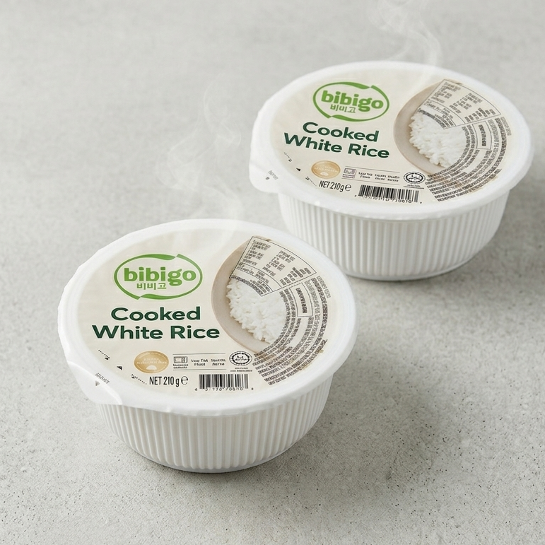
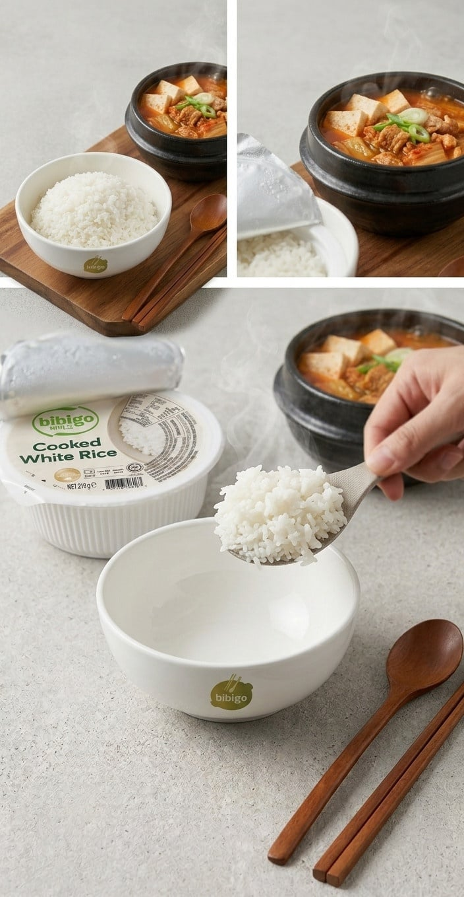

<div> <table style="border-collapse: collapse; width: 99.9809%;" border="1"><colgroup><col style="width: 49.9522%;"><col style="width: 49.9522%;"></colgroup> <tbody> <tr> <td> <div><span style="font-size: 14pt;"><strong>Bibigo <span>Orez alb fiert</span></strong></span></div> <div><span style="font-size: 14pt;"><strong>210g</strong></span></div> <div><span style="font-size: 14pt;">Ambalajul Cooked White Rice de la Bibigo, cu un designul modern, care asigura o &nbsp;portionarea ideala de 210g, ce permite obtinerea unui preparat cald, proaspat si extrem de rapid de pregatit, gata sa completeze orice masa asiatica.</span></div> </td> <td></td> </tr> <tr> <td></td> <td><span style="font-size: 14pt;">Nimic nu se compara cu un orez pufos si aburind, gata sa absoarba toate aromele unei tocanite traditionale precum Kimchi Jigae. Aceasta combinatie iti arata cat de usor este sa transformi o cina rapida intr-o adevarata experienta de restaurant, direct in confortul casei tale.</span></td> </tr> <tr> <td><span style="font-size: 14pt;">Orezul alb Bibigo este surprins in inima naturii, alaturi de un lan superb de orez ce sugereaza puritatea si calitatea superioara a ingredientelor. Ambalaj practic care contine un orez pufos evoca prospetimea unui produs 100% natural, cultivat cu grija si respect pentru traditie.</span></td> <td></td> </tr> </tbody> </table> </div>